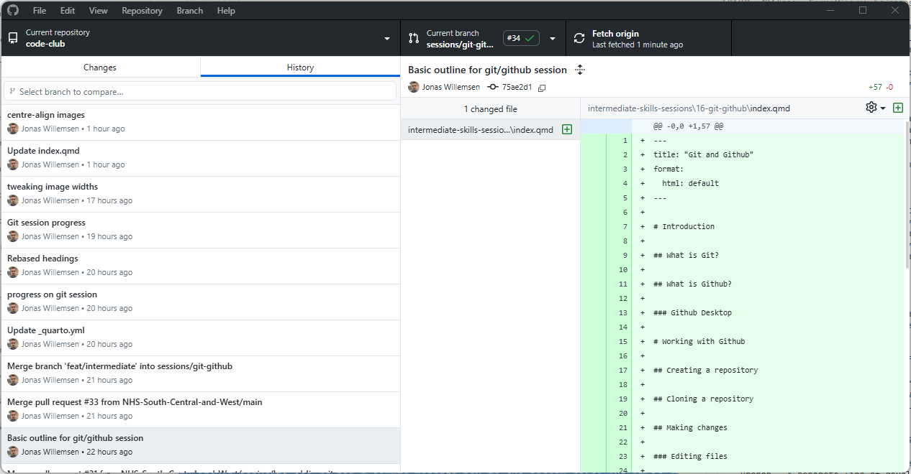

Git and Github
Introduction
What is Git?
Git is a version control system. It’s software that helps you track changes to your files over time. You can sort of think of it like Track Changes in Word, but applied to an entire folder worth of files, much more powerful, and primarily designed to work with plaintext files - such as Python code, for example.
The basic concept in Git is a repository, which you can think of as a project that can contain an unlimited number of files and folders.
Using Git for a project lets us:
- Automatically create and keep snapshots of your work at different points in time
- Clearly see exactly what changed between versions
- Go back to earlier versions if something goes wrong
- Create branches that let individuals or subgroups work on parts of a project without affecting the rest of it
- Understand who made which changes and when
- Request reviews from our colleagues, add comments to changes, and resolve issues before committing to an update
Git was created in 2005 by Linus Torvalds (who also created Linux) and has become the standard tool for version control, particularly in software development. However, it’s useful for any project where you’re working with text files - reports, data analysis scripts, documentation, and more.
What is Github?
Github is a website that hosts Git repositories online. While Git works on your own computer and can be hosted on an organisation’s server, Github provides a place to store your repositories in the cloud where others can access them.
Github adds several features on top of Git:
- A backup of your work stored safely online
- Easy collaboration - multiple people can work on the same project using a web-based interface
- A web interface to browse your files and history without using Git commands
- Github Desktop, an application that runs on your computer and lets you sync a Github repository with your local filesystem
- Tools for managing projects, discussing changes, and reviewing code
- A way to share your work publicly or keep it private within your organisation, with detailed user-based permissions
Many organisations use Github to manage their projects because it makes collaboration straightforward and keeps everything in one accessible place. It’s free for most use cases, including unlimited private repositories for teams.
Alternatives to Github do exist - one example is Gitlab.
Github is a public platform ultimately operated by Microsoft with servers in the USA. Public repositories are visible to anyone, even those without a github account! Be absolutely sure you understand what you’re pushing to Github if you are working on a project that interacts with non-public NHS data in any way. Even if you’re working with a private repository, this still is not suitable for anything sensitive as this will not be GDPR compliant.
Terminology
Git and Github use their own terminology and it’s important to keep this straight if we want to understand how to work with it. The essentials are below. This is non-exhaustive, but covers the basics needed to get started.
- Repository (“repo”) - A project folder that Git is tracking. Contains all your files plus the complete history of changes.
- Commit - A saved snapshot of your work at a particular point in time. Each commit records what changed, who made the change, and when.
- Clone - Making a copy of a repository from Github onto your computer so you can work on it locally.
- Push - Sending your commits from your computer up to Github so others can see them.
- Pull - Downloading commits from Github to your computer to get the latest changes others have made.
- Pull request - A process for merging changes made on a branch back into the
mainbranch. - Branch - A separate line of development. Lets you work on new features without affecting the main version of your project.
- Merge - Combining changes from one branch into another, typically bringing your work back into the
mainbranch. - Staging - Marking files to be included in your next commit. You stage changes before committing them.
- Conflict - When Git can’t automatically merge changes because two people edited the same part of a file differently. A merge conflict requires manual intervention to resolve, but thankfully Github gives us nice tools to deal with this.
Working with Github
Creating a repository
Once you’ve got a Github account, creating a repository is very simple. On github.com/new, there’s a single screen that lets you create a blank repository. The key thing is choosing whether the repo is going to sit under your personal account or under an organisation, and deciding whether it is going to be public or private.

Cloning a repository
Cloning just means downloading the current state of a repository from Github to our local machine. However, we normally do this so that we can make local changes and potentially upload (push) those back to the source repository!
In Github Desktop, assuming you’re logged into your Github account that has access to the repo you want to clone, you should see it in the list when you click File > Clone Repository:

A brief note on gitignore
There are often cases where we want certain parts of the project not to be tracked by git. For example, if we’re using uv to maintain a venv with our python libraries, it would be a waste for these files to be uploaded and downloaded every time we interact with our repo. uv actually takes care of this for us! But in other cases we need to do this ourselves - for example, we might be writing a project that uses csv files for data, and we don’t want these to be uploaded.
Github Desktop makes this very easy. When we’ve added some files or folders that we want git to ignore, we just right click within the changes list and add either the individual files or entire folders to gitignore - once we’ve done this, git will disregard these files and folders, refrain from pushing them to the remote repo, and not track any changes made to them.

We can also go to Repository > Repository Settings… and see everything currently in our gitignore file.

Making changes
Editing files
Once we’ve set up our repo in Github Desktop, any changes to the local folder (with the exception of anything covered by gitignore) will automatically be detected. The app will helpfully show us which files have been added, removed, or changed, and for the latter it will directly show which lines have been altered:

Staging changes and commit messages
In Git, staging is the process of selecting which changes you want to include in your next commit.
In Github Desktop, staging is handled automatically for you. When you make changes to files, they’ll appear in the left panel. By default, all changed files are staged (they have a tick next to them). If you want to commit only some files, you can untick the others - only the ticked files will be included in your commit.
Every commit needs a commit message - a short description of what changed and why. Good commit messages are crucial for understanding your project’s history later.
In Github Desktop, you’ll see a commit message box at the bottom left. The first line is the summary (required) - keep this short and clear, like “Fix bug in data import function” or “Add analysis for Q3 data”. The larger text box below is for an optional description where you can add more detail if needed.

Once you’re happy with your message, click “Commit to [branch name]”. Remember that if you’re working on a public repo, these comments will be visible publicly on Github.
Pushing and pulling
Pushing your changes
Once you’ve made one or more commits locally, they exist only on your computer. To share them with others (or just to back them up to Github), you need to push them.
In Github Desktop, after you’ve made a commit, you’ll see a button at the top that says “Push origin” with a number indicating how many commits are waiting to be pushed. Simply click this button and your changes will be uploaded to Github.

It’s good practice to push regularly, and certainly when you want other people to see the changes you’ve made in order to comment on them (or base their own changes on them).
Pulling changes from others
If you’re working with others on the same repository, they’ll be making changes too. To get their latest changes onto your computer, you need to pull from Github.
In Github Desktop, when there are new commits on Github that you don’t have locally, you’ll see a “Pull origin” button at the top. Click this to download the latest changes.

Make sure you’ve pulled the latest state of the branch before making your own changes - not doing so can result in conflicts.
Viewing history
One of the most powerful features of git is the ability to see your project’s complete history. In Github Desktop, click on the “History” tab (next to “Changes”) to see a list of all commits that have been made to the repository.

Clicking on any commit shows you exactly what changed in that commit - which files were modified, and what the specific changes were. This is incredibly useful for understanding how your project evolved, or for tracking down when a particular change was made.
You can also view this history on the Github website, which provides additional features like searching through commits and viewing the state of files at any point in time.
Branching basics
Branches are one of Git’s most powerful features, but they can seem confusing at first. Think of them as parallel versions of your project where you can experiment or work on new features (like a specific subset of a report) without affecting the main version.
By default, every repository has a main branch. This is typically the “official” version of your project. When you want to add a new feature or make significant changes, you can create a new branch, make your changes there, and then merge them back into main when you’re happy with them.

In Github Desktop, you can create a new branch by clicking on the “Current Branch” dropdown at the top and selecting “New Branch”. Give it a descriptive name like “add-data-validation” or “update-documentation”.

Once you’re on a branch, any commits you make will only affect that branch. You can switch back to main (or any other branch) at any time using the same dropdown. When your work on the branch is complete, you’ll typically merge it back into main using a pull request (covered in the Collaboration section).
Collaboration
Working with others
One of Github’s greatest strengths is making collaboration straightforward. When multiple people are working on the same repository, the basic workflow is:
- Pull the latest changes before you start work
- Make your changes and commit them locally
- Pull again to get any changes others have made while you were working
- Push your changes.
For larger teams or more complex projects, it’s common to use branches for each feature or task. This means different people can work on different aspects of the project simultaneously without interfering with each other’s work. However, this is optional, and if you’re just starting out with Github it’s absolutely fine to just keep everything on a main branch while you get the hang of things.
Handling conflicts
Sometimes, Git can’t automatically merge changes because two people have edited the same part of the same file in different ways. This is called a merge conflict, and it requires manual intervention to resolve.
When you pull changes and a conflict occurs, Github Desktop will show you which files are conflicted. You can click on a conflicted file and Github Desktop will show you both versions of the conflicting sections, letting you choose which to keep (or manually edit to combine them).

Pull requests
A pull request (often abbreviated to PR) is how you propose and discuss changes before they’re merged into the main branch. Despite the name, it’s not actually about “pulling” - think of it as a request for your changes to be merged.
The typical workflow is:
- Create a branch for your work
- Make commits on that branch
- Push the branch to Github
- Open a pull request on Github’s website (Github Desktop will also offer to do this for you)
- Others can review your changes, leave comments, and suggest modifications
- Once approved, the pull request is merged into
main
Pull requests are particularly useful because they provide a space for code review and discussion, and they create a clear record of what changed and why. They’re central to how many development teams work.